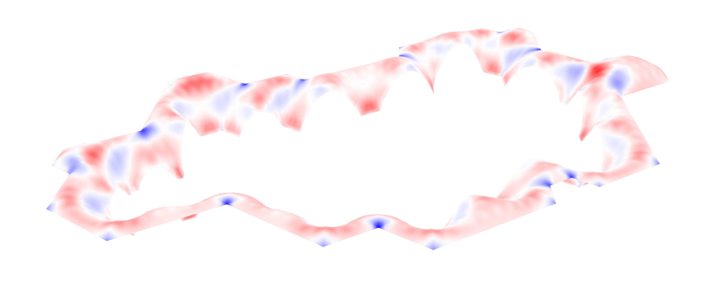
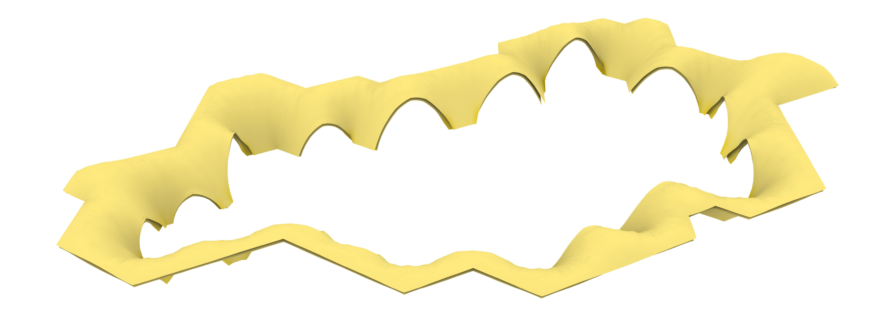
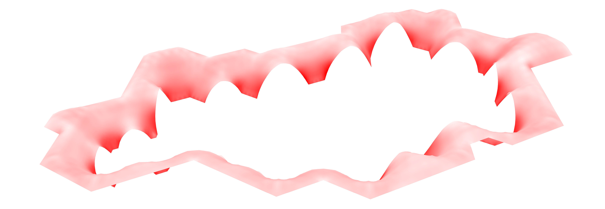
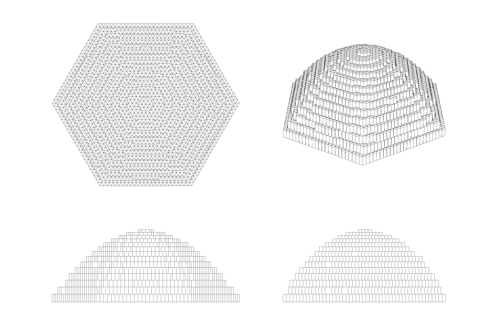
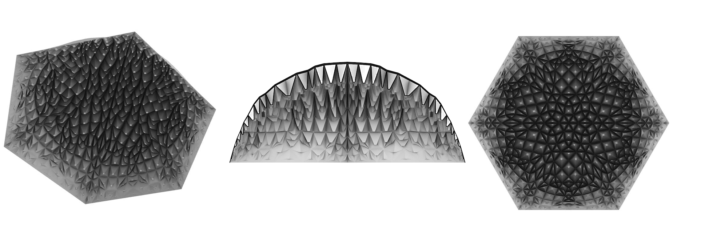
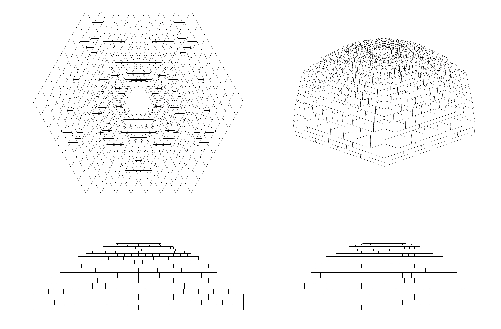
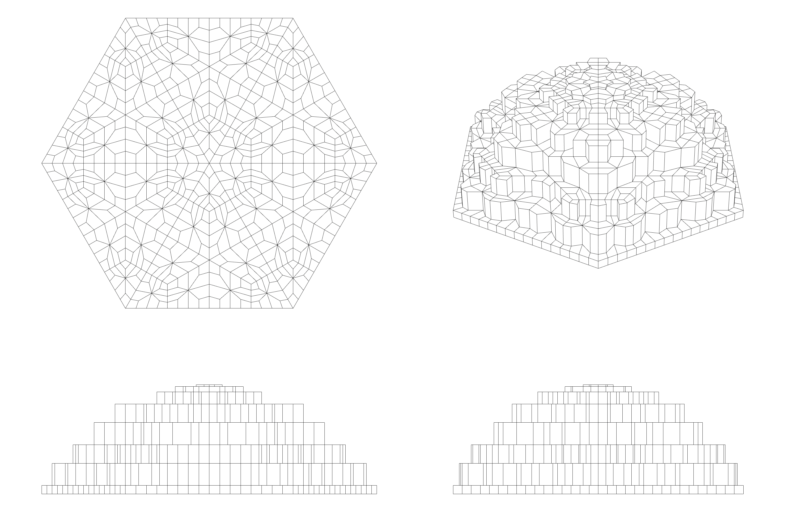
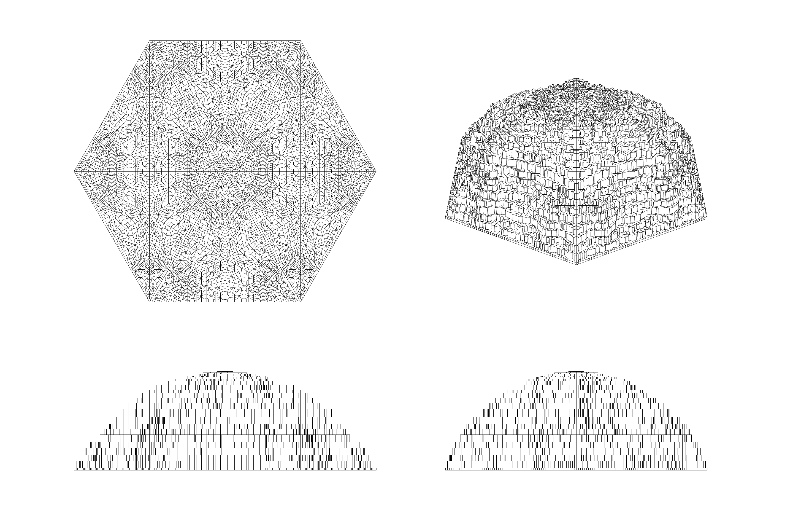
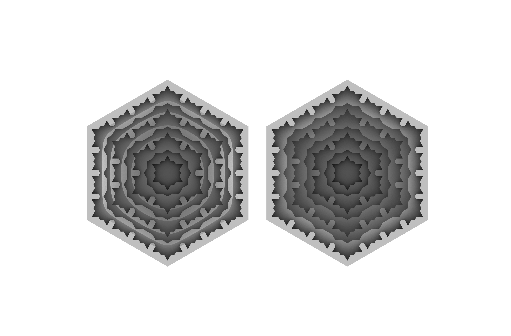
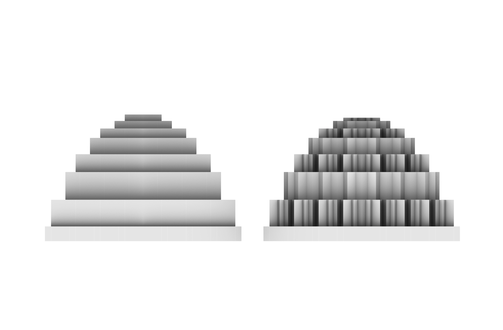

Forming:
The translation from the Bubble diagram and concept to the shape
Sometimes pictures are too small for their quality, feel free to open them in a new tab
In this chapter we give our results on how we went from bubblediagram and the results of 1_Configuration into a 3D shape. It involves creating a ruleset for the floorplan, as well to go into the heigth. It follows our design process and how this process could be repeated for following Hammam. Our idea was that there will be more Hammam in the camp and that and computational process is needed to develop these. For this purpose we developed this ruleset, or pseudocode. We explained how the whole process is done and at #our_translation shows how we implemented this ruleset into the design that was our product.
The Ruleset
This chapter explains how we translated the bubble diagram to a 3D-shape. To make this translation, we used a ruleset to determine the overall shape of the building. We assume that there is no "one best design" but many possible good designs. Also, as described in #Location Finding, the main idea is to realise more of these Hammam. For this purpose we need several approaches with possible outcomes, depending on some parameters. The ruleset follows the following rules:
Rule N01: Create the triangular grid of 1.6m

Fig. 1: Rule N01: Create the triangular grid of 1.6m
The functions are all hosted into hexagonal rooms because hexagons: - Are compatible with domes shapes - Are related to the typology of Hammams The hexagonal grid is translated into a triangular grid as triangles can form hexagons and hexagons can be divided into triangles. Also, the triangular grid is more flexible than a hexagonal grid. In the beginning a grid of equilateral triangles with sides of 1.2m sided is applied, because their height is equal to 1m as the width of corridors or openings. In later steps a triangular grid of 1.6 meter is found to be more suitable because in earthy structures the walls have a considerable thickness.
Rule N02: Place the bubble diagram in the grid

Fig. 2: Rule N02: Place the bubble diagram in the grid
Rule N03: Define push/pull points of the functions
Within this rule, we assume three "function-groups" that follow the Program of Requirements.
Entrance (functions):
Entrance_reception
washing (m)
washing (f)
g_wcChildcare (functions):
ch_common_room
ch_care_room
ch_equip
ch_washing
ch_group_room
ch_storage_room
ch_open_spaceHammam (functions):
h_dressing room
h_sub1_tea
h_sub2_cleaning
h_hal
h_sub4 water_tanks_tech
h_hot house
h_sub5_private washing room
H_sub6_hot_pool
H_sub7_cold_pool
h_sub8_wc

Fig. 3: Rule N03: Define push/pull points of the functions
Define the pull point of entrance (functions).
Define the middle of the grid as the pull point of the garden
Then, develop the Hammam (functions) and childcare (functions) in opposite directions. They are placed from the entrance and are placed in a way that they surround the garden.
The center point of the plot acts as push point to achieve the biggest garden possible
Rule N04: Change the bubble diagram according to the push and pull points and leave one row of triangle distance between the bubbles

Fig. 4: Rule N04: Change the bubble diagram according to the push and pull points and leave one row of triangle distance between the bubbles
Rule N05: Place the functions in hexagonal rooms

Fig. 5: Rule N05: Place the functions in hexagonal rooms
Rule N06: Define the corridor area between the hexagons

Fig. 6: Rule N06: Define the corridor area between the hexagons
A triangle is a corridor if the triangle:
- has 2 out of 3 corners that are attached to 2 different hexagons
- is needed to achieve the connections between the functions according to the bubble diagram (step 4). The shortest path is chosen
- could avoid dead corners happening somewhere in the building

Fig. 8: The result, where the grey areas are corridors
Rule N07: Define the semi-open space

Fig. 9: Rule N07: Define the semi-open space
The semi-open space is made out of the two triangle rows that are more close to the hexagons and corridors.
If a corner-edge is 60°, Then the triangle on the corner that belongs to the garden is added to the semi-open space
Rule N08: Define the type of connection between the rooms

Fig. 10: Rule N08: Define the type of connection between the rooms
For this connection, we see 4 different possibilities to connect rooms:
- Direct connection, a normal door or arch
- Indirect connection, a window or perforated wall
- Long-distance connection, a corridor or the stoa
- No connection
Rule N09: Draw the wall-lines

Fig. 11: Rule N09: Draw the wall-lines
Wall-lines are drawn according to the type of connections.
Switch(connectionType):
- case Direct connection => expansion + 1 * door_opening
The triangles are taken by one hexagon and a door opening is created in the common wall.
- case Indirect connection => 2 * door_opening
Two door openings, that are not facing each other, are created in each wall of the two rooms
- case Long-distance connection => 2 * door_opening
The triangles of the corridor that connect the two rooms are remaining as corridor and door openings are placed in the rooms to achieve connection
- case No connection => expansion
The triangles of the corridor are taken by one room
Add emergency exist door openings in the corridors where needed

Fig. 12: This gives the following floorplan (the result of the configuration)
Rule N10: Adjust the foorheights

Fig. 13: Rule N10: Adjust the foorheights
The deeper the floorheight of a room is the more privacy and stable temperature is needed. For the groups and names of the spaces, see rule N03. So the floorheights are adjusted as following:
- Fl_h (semi_open_sp) == 0.0m
- Fl_h (entrance (functions) + childcare (functions)) == 0.0m
- Fl_h (hammam(h_dressing room, h_sub1_tea, h_sub2_cleaning, h_sub8_wc, h_hal, h_sub4 water_tanks_tech)) == -0.3m
- Fl_h (hammam(h_hot house)) == -0.6m
- Fl_h(hammam(h_sub6_hot pool h_sub7_cold pool h_sub5_private washing room)) == -0.9m
Corridors are getting the floorheight of the neighboring hexagon that has the lowest floor height
Rule N11: Add wall thickness and wall height

Fig. 14: Rule N11a: Add wall thickness and wall height
In the hexagons the wall thickness will be added in the inside. Hexagons with side length:
- Hex_side == 1 * grid_size => wall_thickness == 0.5m
- Hex_side == 2 * grid_size => wall_thickness == 0.8m
- Hex_side == 3 * grid_size => wall_thickness == 1.0m
- Hex_side == 4 * grid_size => wall_thickness == 1.2m
Wall_semi-open_sp => wall_thickness == 1.0m offseted both-sided
If corridor_side == no_wall => wall_thickness == 0.5m offseted inside
Wall height is 2.4 from floorheight

Fig. 15: Rule N11b: Offset wallthickness to the semi open space

Fig. 16: Rule N11c: Result of the wallthickness
Rule N12: Add supports of semi-open space as following

Fig. 17: Rule N12: Add supports of semi-open space as following
length_side == grid_size => side == wall_support
corner ≠ wall_support_corners => corner == column_support
grid_size < length_side ≤ 3 * grid_size => no support
3 * grid_size < length_side
- length_side == number_even * grid_size => wall_support
- length_side == number_odd * grid_size => column_support

Fig. 18: Result until now
Rule N13: Add door openings

Fig. 19: Rule N13: Add door openings
Diagonal extrusion is used in the wall, it ensures privacy and is easier to build.
Placing of the door openings is bases on the configuration plan
The size of the door opening is equal to the largest opening size that can be achieved in the smallest hexagon
Rule N14: Add small ventilation openings

Fig. 20: Rule N14: Add small ventilation openings
Small openings are added in sides where no door is placed and in:
- In every side of the hexagons that is attached in its whole length with the semi-open space
- In every side of the hexagons that is part of the building outline
- In every side of the corridor that is in a dead end
Rule N15: Create the ceilings

Fig. 21: Rule N15: Create the ceilings
Triangular tessellation of corridors and domes area without the wall thickness
Move the surfaces 2.4 meters up from the floors
Set outlines of the surfaces as anchor lines
Apply dynamic relaxation
Rule N16: Add ceiling openings

Fig. 22: Rule N16: Add ceiling openings
For the domes:
- At the highest point, which is the middle of the dome
For the corridors:
- In the middle of the triangles that are in neighboring with 3 other triangles of the same corridor
- In the middle of the triangles that are one grid size away from the buildings outline
Rule N17: Create the 2nd roof

Fig. 23: Rule N17: Create the 2nd roof
Move the hexagonal and triangular boundaries 2.4m up from the their floorheigths
- If two lines are same in top view, Then Check their heights
- If they have different heights, Then remove the line that has the lowest height
- Else remove one line randomly
Place points on the lines with equal distances in top view
Move the points in Z-direction
- The length of the movement is higher if the horizontal distance of the point to the closest the building outline or the garden outline is high.
Offset the support lines of the semi-open space by 0.8 inside the garden
Add the above points and lines as anchor components
Tesselate triangular the roofing surface

Fig. 24: Final mesh without simplifications
Apply dynamic and simplify the surface
Simplify further in Meshmixer

Fig. 25: Final mesh
Our approach
We also applied this ruleset/design process into our program. The GIF below shows the implementation of this process that led to our design. It is the basic shape, we will later implement some other pieces to make Adobe 2.0. Overall, the ruleset already gives a shape of a buildable Hammam.

Fig. 26: Implementations of the rules
For this project a script was developed that included all of our approach. Go to scripts
Adobe 2.0
As described above, we want to implement some "interesting pieces" that push the use of the adobe to more extremes, or Adobe 2.0. In the GIF above, it is clearly seen that we implement the stoa inside the design, although it is not in the ruleset. We consider the stoa to be a very interesting piece of the Hammam and would like to see it being constructed on a new level of adobe use. Secondly, we see great potential in the largest dome and how to construct this. Looking into traditional architecture and their design could help understanding how this could be done.
The stoa

Fig. 27: Section of the Hammam with the stoa in it
The Semi-open space that surrounds the garden, seen in Figure 27, is an important element because of its climate and social aspect. It is a wide corridor that connects all the
functions but also provides a shaded area around the garden where the users can relax and socialize. The width of the semi-open space is getting larger next to the tea room where more area is needed.
Its openings are defined by a script, that is taking into consideration the structural weaknesses of the shape and creates as larger openings as possible. The openings and their columns are written in the
ruleset, where the larger openings are tried to be created. The stoa is rested on columns on the garden-side and on the other side on the wall. Rule N11
includes an offset for walls on the stoa side.
Once the supports and openings are defined the ceiling is calculated by dynamic relaxation. For more inforation about the tesselation of the stoa and all structural behaviour of this piece check out our structural report at our structural report page.

Fig. 28: Stresses in the dynamic relaxed stoa
As can be seen there are some stresses and the shape isn't perfect for compression-only building. Therefore, its thickness is structurally optimized. In this way the final shape of the semi-open space is constructed.

Fig. 29: Ideal thicknesses of the stoa

Fig. 30: Stresses in the thickness adjusted stoa
Murqarnas
For this project a script was developed that included all of our approach.
Go to scripts
There were several approaches to designing the hothouse, where the first was from a geometrical perspective. The hexagon is translated into a normal dome using pendentives. Technically this is the same technique that is used for the normal domes but with a bit nicer translation.

Fig. 31: Geometrical perspective; a normal dome on top of pendentives
When tesselating the dome and using prisms as small voxels, the dome could start looking like muqarnas. This was the first approach towards reaching the desired muqarnas. Also the pendentives are given a diameter to translate the whole dome into a 3D object.

Fig. 32: Geometrical perspective; a normal dome with small prisms
Then the Karbandi was combined with the Murqarnas dome. Already it became clear how nice muqarnas could look and how great the potential was. The following picture has clearly repetitive elements that combined form the dome.

Fig. 33: Geometrical perspective; a section and bottom view of the muqarna potential
The last step in the geometrical approach was also implementing muqarnas on the pendentives. The whole dome now consists of these elements and looks like the following figure.

Fig. 34: Geometrical perspective; the whole dome translated into muqarnas
From this approach a few things could be learned. Firstly, the geometrical way isn't ideal, as it cannot be combined with the tessellation and is still a normal dome on top of pendentives.
Building these can be very hard and might only make matters worse. Secondly, the geometry cannot be simulated easily. To adjust the height and width of the form finding geometry,
sliders are used. Also, having the dynamic relaxed shape as input for our dome is prefered. Lastly, this will also follow the other reasons a bit, the geometrical approach only works with
point-symmetrical shapes. Concluded, it is important to take the shape of the dome as input. Or using the tessellation or by using the dynamic relaxed mesh.
So first the dynamic relaxed mesh is used as input of the dome. When extruding the grid (of 0.4 meter) into the Z-direction, prisms can be created and then intersected with the relaxed geometry. This should then give the prisms as bounding boxes of the muqarnas, whereafter the muqarna structure can be implemented.

Fig. 35: Topological perspective: A dome created out of prisms
It can be seen that this is not the ideal way of creating this shape. The height is here put into a solid distance, but also when making variable heights, it will be messy. The
picture shows a lot of weird prisms on the long edges that are problematic. The whole shape is not point-symmetric anymore. The other disadvantage is that the dome doesn't follow
the tessellation.
Next the tessellation as input is tried to create the dome.

Fig. 36: Topological perspective: A dome created out of the tessellation
As can be seen the problem with this approach is, that it is following the logic of muqarnas in opposite direction. And instead of giving thickness to the lower levels it is giving
thickness to upper ones so it is not constructable.
After this, the tessellation is divided for each layer. However this produces unexpected errors at the corners and in addition it works only for simple symmetrical shapes.

Fig. 37: Topological perspective: A dome created out of layered tessellation
In the last approach each offset of the mesh tessellation was defined as a muqarnas slab and intersected it with relaxed geometry.

Fig. 38: A dome created out of (simple) mesh tesselation

Fig. 39: A dome created out of mesh tesselation
This time it worked with both different tessellations from simple ones to more complex ones and it worked even with asymmetrical shapes at junction of our corridors.

Fig. 40: Muqarnas in the non-symmetrical corridors
Next to complete the script more material was added to the back of the elements to make them structurally stable and the geometry was intersected with the inner face mesh to reduce the not needed parts. It gave the following result:

Fig. 41: Bottom views of possible muqarnas

Fig. 42: Side view of posssible muqarnas
So lastly this method was further developed and some experimenting took place with tessellations and how they would influence the muqarnas. Best was if there weren't too many different pieces so a maximum of 8 different kind of elements is prefered, so there are not more than 8 kinds of molds. The first approach was by using diamond-shaped muqarnas. All the muqarnas were placed in two different number of levels. Overall it looked very beautiful, but there were too many elements.

Fig. 43: Diamond shape muqarnas. Different sizes with different amounts of elements

Fig. 44: The result in 3D. Very nice looks, but a lot of elements (12)
Another tessellation that was tested, also had a lot of beauty in it. Then again, as this resulted in a few less elements (9 in stead of 12), the amount of elements was still too high

Fig. 45: Another approach, less elements and fairly complicated design
The next tessellation was picked carefully and was more based on the hexagon. Even with a smaller scale muqarna, still there are only 4 elements to build it with. This makes it constructable and
it seems a very nice option. Also, the looks of it are still very beautiful.

Fig. 46: The "final" tesselation that results in only 4 elements

Fig. 47: The bigger size is chosen to allow for easier constructability. If there are machines at hand, the smaller one is also an possiblity